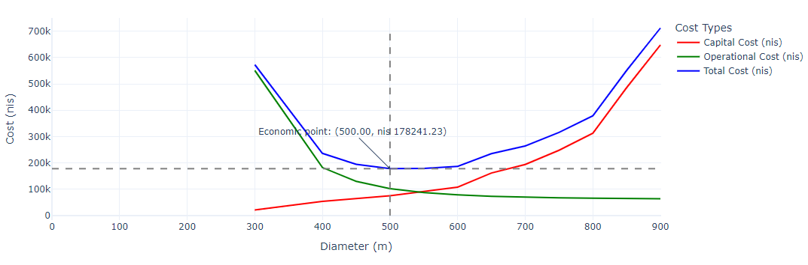

Choosing the Optimal Pipe Diameter in a Water Supply System#

This notebook guides through the process of using code to solve basic economic diameter problems, providing step-by-step instructions.
Learning Objectives:#
A simple Python program to determine the economic diameter for a pipe that carries water from point A to point B, while considering hydraulic limitations and economic considerations. The solution includes:
Applying the Hazen-Williams equation to calculate head losses in pipe networks
Perform economic analysis (capital and operating costs) taking into account the time value of money.
The data structure and case study details are provided below.
Pipe Options:
A list of diameters and installation costs (per kilometer) is available. For example pipes and their costs, download the “Pipes.xlsx” file from the GitHub repository: Relkayam/EconomicalDiameter
1 Import Packages#
Import the following packages:
import pandas as pd
2 Input Data#
Into the variable
pipe_path, enter the appropriate link to the sheet containing the pipe data and their costs.Read the file into a DataFrame.
Use the variable
df_pipes.
pipes_path = 'Pipes.xlsx'
df_pipes = pd.read_excel(pipes_path)
df_pipes.head()
| Diameter [mm] | Cost per Km [1000 x nis] | |
|---|---|---|
| 0 | 100 | 7 |
| 1 | 200 | 10 |
| 2 | 300 | 20 |
| 3 | 400 | 50 |
| 4 | 450 | 60 |
The dictionaries below define the input data, facilitate unit transfers, and store the constants required by the code.
# Constants dictionary, at the moment including only units transfer
constants = {
"meters_in_km": 1000,
"milimeter_to_meter": 0.001,
"month_in_year": 12,
"seconds_in_hour": 3600
}
# Data dictionary
data = {
"flow": 500, # flow [m³/h]
"length_m": 10000, # length [m]
"altitude_A": 40, # altitude A [m]
"altitude_B": 55, # altitude B [m]
}
# Calculate delta_z
data["delta_z"] = data["altitude_B"] - data["altitude_A"]
# Calculate length_km using the constants dictionary
data["length_km"] = data["length_m"] / constants["meters_in_km"]
# General parameters dictionary
general_parameters = {
"return_periods": 15, # in years
"interest_rates": 0.07, # 7%
"pump_efficiency": 0.9, # 90%
"hours/day": 15, # assuming the pump should work X hours per day
"days_in_year": 365, # in case the pump should work every day
"electricity_cost": 0.5 # [nis/kWh]
}
3 Functions for Calculating Head Loss#
Build a function named: calculating_Headloss_per_km that receives:
Flow rate in units of m³/h
Diameter in units of mm
C = 130, which is the default value of 130
The function calculates the head loss in the pipe due to flow and returns the head loss per kilometer of pipe. We’ll use Hazen–Williams formula:
where h_f is the head loss for 1 meter pipe, L = pipe length (m), Q = flow (m³/s), C = Hazen–Williams roughness coefficient (dimensionless), and d = pipe diameter (m).
def calculating_Headloss_per_km(flow_rate, diameter, c=130):
"""
flow -> in m^3/h
diameter -> in mm
"""
flow_m3_s = flow_rate/constants['seconds_in_hour']
diameter_m = diameter * constants['milimeter_to_meter']
head_loss_per_meter = (10.67* flow_m3_s**1.852) / (c**1.852 * diameter_m**4.8704)
head_loss_per_km = head_loss_per_meter * constants['meters_in_km']
return head_loss_per_km
4 Functions for Calculating Pump Power#
Build a function named: pumping_power that receives:
Flow rate in units of m³/h
Total head in units of meters
Pump efficiency
The function calculates the pump power in units of KW.
def pumping_power(flow_rate, total_head, efficiency):
"""
flow rate in m^3/h
total head in meter
efficiency in percentage fraction
P [kW] = (Q * H_total) / (η * 367.2)
"""
power_kw = (flow_rate * total_head) / (367.2 * efficiency)
return power_kw
5 Calculating the Annual Payment for Installation Costs#
def calculate_capex_annual_return(total_cost, years, interest_rate):
"""
Amortization method: https://www.investopedia.com/terms/a/amortization.asp
annual_return = (total_cost * interest_rate-MONTHLY*((1+interest_rate)^number_of_payments-MONTHS))/(((1+interest_rate-MONTHLY)^number_of_payments-MONTHS)-1)
"""
number_of_payments = years * constants['month_in_year']
monthly_interest_rate = interest_rate / constants['month_in_year']
monthly_return = (total_cost * monthly_interest_rate*((1+monthly_interest_rate)**number_of_payments))/(((1+monthly_interest_rate)**number_of_payments)-1)
annual_return = monthly_return * constants['month_in_year']
return annual_return
6 Main Calculation Loop#
Before the loop, create an empty list named
results.Run a loop over the diameters and their prices,
For each of the diameters:
Calculate the head loss - use the function calculating_Headloss_per_km.
Calculate the total required head.
Calculate the required pump power - use the function pumping_power.
Calculate the annual energy costs.
Calculate the installation costs.
Calculate the annual payment for the installation costs using the function calculate_capex_annual_return.
Calculate the total cost.
Add to the list you created (results) using the command append, for each diameter, the following dictionary:
{ ‘Diameter (mm)’: diameter ‘Head Loss (m)’: h_f ‘Total Head’: total_head, ‘Power (kW)’: power, ‘Capital Cost (nis)’: capex_annual_return, ‘Operational Cost (nis)’: opex_annual, ‘Total Cost (nis)’: total_cost }
results = []
for diameter, cost_per_meter in zip(df_pipes['Diameter [mm]'], df_pipes['Cost per Km [1000 x nis]']):
h_f = calculating_Headloss_per_km(data['flow'], diameter) * data['length_km']
total_head = h_f + data['delta_z']
power = pumping_power(data['flow'], total_head, general_parameters['pump_efficiency'])
capex = cost_per_meter * data['length_m']
opex_annual = power * general_parameters['hours/day'] *general_parameters['days_in_year'] * general_parameters['electricity_cost'] #
capex_annual_return = calculate_capex_annual_return(capex, general_parameters['return_periods'], general_parameters['interest_rates'])
total_cost = opex_annual + capex_annual_return
results.append({
'Diameter (mm)': diameter,
'Head Loss (m)': h_f,
'Total Head': total_head,
'Power (kW)': power,
'Capital Cost (nis)': capex_annual_return,
'Operational Cost (nis)': opex_annual,
'Total Cost (nis)': total_cost
})
df = pd.DataFrame(results)
7. Results Analysis#
Displaying All Scenarios#
display(df)
| Diameter (mm) | Head Loss (m) | Total Head | Power (kW) | Capital Cost (nis) | Operational Cost (nis) | Total Cost (nis) | |
|---|---|---|---|---|---|---|---|
| 0 | 100 | 24874.911688 | 24889.911688 | 37657.213277 | 7.550157e+03 | 1.030866e+08 | 1.030942e+08 |
| 1 | 200 | 850.403535 | 865.403535 | 1309.313022 | 1.078594e+04 | 3.584244e+06 | 3.595030e+06 |
| 2 | 300 | 118.029397 | 133.029397 | 201.266941 | 2.157188e+04 | 5.509682e+05 | 5.725401e+05 |
| 3 | 400 | 29.072914 | 44.072914 | 66.680153 | 5.392970e+04 | 1.825369e+05 | 2.364666e+05 |
| 4 | 450 | 16.381562 | 31.381562 | 47.478762 | 6.471564e+04 | 1.299731e+05 | 1.946887e+05 |
| 5 | 500 | 9.806139 | 24.806139 | 37.530469 | 7.550157e+04 | 1.027397e+05 | 1.782412e+05 |
| 6 | 550 | 6.164518 | 21.164518 | 32.020875 | 9.168048e+04 | 8.765715e+04 | 1.793376e+05 |
| 7 | 600 | 4.035094 | 19.035094 | 28.799162 | 1.078594e+05 | 7.883771e+04 | 1.866971e+05 |
| 8 | 650 | 2.732426 | 17.732426 | 26.828288 | 1.617891e+05 | 7.344244e+04 | 2.352315e+05 |
| 9 | 700 | 1.904566 | 16.904566 | 25.575778 | 1.941469e+05 | 7.001369e+04 | 2.641606e+05 |
| 10 | 750 | 1.361016 | 16.361016 | 24.753413 | 2.480766e+05 | 6.776247e+04 | 3.158391e+05 |
| 11 | 800 | 0.993921 | 15.993921 | 24.198017 | 3.127922e+05 | 6.624207e+04 | 3.790343e+05 |
| 12 | 850 | 0.739809 | 15.739809 | 23.813558 | 4.853673e+05 | 6.518961e+04 | 5.505569e+05 |
| 13 | 900 | 0.560040 | 15.560040 | 23.541575 | 6.471564e+05 | 6.444506e+04 | 7.116014e+05 |
| 14 | 1000 | 0.335244 | 15.335244 | 23.201471 | 1.617891e+06 | 6.351403e+04 | 1.681405e+06 |
Filtering the Optimal Solutions#
Find the minimum value of the ‘Total Cost (nis)’ column - use the function
min.Create a new variable -
df_cut- which is a row of theDataFramecontaining only the data for the optimal diameter.Use the
locattribute of theDataFrameand write a condition to filter the table.Assign the economic diameter to the variable
economic_diameter.Assign the total economic cost to the variable
economic_cost.
# Find the economic diameter (minimum total cost)
df_cut = df.loc[df['Total Cost (nis)'] == min(df['Total Cost (nis)'])].copy()
print(df_cut)
economic_diameter = df_cut['Diameter (mm)'].values[0]
economic_cost = df_cut['Total Cost (nis)'].values[0]
Diameter (mm) Head Loss (m) Total Head Power (kW) Capital Cost (nis) \
5 500 9.806139 24.806139 37.530469 75501.574752
Operational Cost (nis) Total Cost (nis)
5 102739.659144 178241.233896
Graphical Representation#
# Adjust Plot Range to Highlight Optimal Diameter
df = df.loc[df['Diameter (mm)'] >=300 ]
df = df.loc[df['Diameter (mm)'] <=900 ]
import plotly.graph_objects as go
import pandas as pd
fig = go.Figure()
# Add the three line plots
fig.add_trace(
go.Scatter(
x=df['Diameter (mm)'],
y=df['Capital Cost (nis)'],
mode='lines',
name='Capital Cost (nis)',
line=dict(color='red')
)
)
fig.add_trace(
go.Scatter(
x=df['Diameter (mm)'],
y=df['Operational Cost (nis)'],
mode='lines',
name='Operational Cost (nis)',
line=dict(color='green')
)
)
fig.add_trace(
go.Scatter(
x=df['Diameter (mm)'],
y=df['Total Cost (nis)'],
mode='lines',
name='Total Cost (nis)',
line=dict(color='blue')
)
)
# Add vertical line at economic diameter
fig.add_shape(
type="line",
x0=economic_diameter,
y0=0,
x1=economic_diameter,
y1=df['Total Cost (nis)'].max(),
line=dict(color="grey", width=2, dash="dash"),
)
# Add horizontal line at economic cost
fig.add_shape(
type="line",
x0=0,
y0=economic_cost,
x1=df['Diameter (mm)'].max(),
y1=economic_cost,
line=dict(color="grey", width=2, dash="dash"),
)
# Add annotation for economic point
fig.add_annotation(
x=economic_diameter,
y=economic_cost,
text=f"Economic point: ({economic_diameter:.2f}, nis {economic_cost:.2f})",
showarrow=True,
arrowhead=1,
ax=-50,
ay=-50
)
# Update layout with labels and title
fig.update_layout(
title="Cost vs Diameter",
xaxis_title="Diameter (m)",
yaxis_title="Cost (nis)",
legend_title="Cost Types",
template="plotly_white"
)
# Show the figure
fig.show()
9. Explore#
Change the program or write a different programs that will help you explore how various parameters affect the economic diameter. For example:
Update the dictionary
general_parameters = { "return_periods": [5, 10, 20], "interest_rates": [0.03, 0.05, 0.1], "pump_efficiency": 0.9, "hours/day": 15, "days_in_year": 365, "electricity_cost": 0.5 # [nis/kWh] }
Update the main calculation loop so that you also examine, in addition to the diameter:
All possible return periods.
All possible interest rates.
Hint: You will need to add two for loops inside the main loop.
The new table will have many more rows than the first one.
An example of this also includes the appropriate graph. Use the table and the graph to explore how financing might affect the choice of economic diameter.
general_parameters["return_periods"] =[5, 10, 20]
general_parameters["interest_rates"] =[0.03, 0.05, 0.1]
results = []
for diameter, cost_per_meter in zip(df_pipes['Diameter [mm]'], df_pipes['Cost per Km [1000 x nis]']):
h_f = calculating_Headloss_per_km(data['flow'], diameter) * data['length_km']
total_head = h_f + data['delta_z']
power = pumping_power(data['flow'], total_head, general_parameters['pump_efficiency'])
for years in general_parameters['return_periods']:
for rate in general_parameters['interest_rates']:
capex = cost_per_meter * data['length_m']
opex_annual = power * general_parameters['hours/day'] *general_parameters['days_in_year'] * general_parameters['electricity_cost'] # annual_energy_cost
capex_annual_return = calculate_capex_annual_return(capex, years , rate)
total_cost = opex_annual + capex_annual_return
results.append({
'Diameter (mm)': diameter,
'Return Period (years)': years,
'Interest Rate': rate,
'Head Loss (m)': h_f,
'Total Head': total_head,
'Power (kW)': power,
'Capital Cost (nis)': capex_annual_return,
'Operational Cost (nis)': opex_annual,
'Total Cost (nis)': total_cost
})
df = pd.DataFrame(results)
Results Analysis#
display(df)
| Diameter (mm) | Return Period (years) | Interest Rate | Head Loss (m) | Total Head | Power (kW) | Capital Cost (nis) | Operational Cost (nis) | Total Cost (nis) | |
|---|---|---|---|---|---|---|---|---|---|
| 0 | 100 | 5 | 0.03 | 24874.911688 | 24889.911688 | 37657.213277 | 1.509370e+04 | 1.030866e+08 | 1.031017e+08 |
| 1 | 100 | 5 | 0.05 | 24874.911688 | 24889.911688 | 37657.213277 | 1.585184e+04 | 1.030866e+08 | 1.031025e+08 |
| 2 | 100 | 5 | 0.10 | 24874.911688 | 24889.911688 | 37657.213277 | 1.784752e+04 | 1.030866e+08 | 1.031045e+08 |
| 3 | 100 | 10 | 0.03 | 24874.911688 | 24889.911688 | 37657.213277 | 8.111103e+03 | 1.030866e+08 | 1.030947e+08 |
| 4 | 100 | 10 | 0.05 | 24874.911688 | 24889.911688 | 37657.213277 | 8.909503e+03 | 1.030866e+08 | 1.030955e+08 |
| ... | ... | ... | ... | ... | ... | ... | ... | ... | ... |
| 130 | 1000 | 10 | 0.05 | 0.335244 | 15.335244 | 23.201471 | 1.909179e+06 | 6.351403e+04 | 1.972693e+06 |
| 131 | 1000 | 10 | 0.10 | 0.335244 | 15.335244 | 23.201471 | 2.378713e+06 | 6.351403e+04 | 2.442227e+06 |
| 132 | 1000 | 20 | 0.03 | 0.335244 | 15.335244 | 23.201471 | 9.982757e+05 | 6.351403e+04 | 1.061790e+06 |
| 133 | 1000 | 20 | 0.05 | 0.335244 | 15.335244 | 23.201471 | 1.187920e+06 | 6.351403e+04 | 1.251434e+06 |
| 134 | 1000 | 20 | 0.10 | 0.335244 | 15.335244 | 23.201471 | 1.737039e+06 | 6.351403e+04 | 1.800553e+06 |
135 rows × 9 columns
Finding the Optimal Solutions#
min_costs = df.groupby(['Return Period (years)', 'Interest Rate'])['Total Cost (nis)'].idxmin()
optimal_solutions = df.loc[min_costs]
display(optimal_solutions)
| Diameter (mm) | Return Period (years) | Interest Rate | Head Loss (m) | Total Head | Power (kW) | Capital Cost (nis) | Operational Cost (nis) | Total Cost (nis) | |
|---|---|---|---|---|---|---|---|---|---|
| 45 | 500 | 5 | 0.03 | 9.806139 | 24.806139 | 37.530469 | 150937.001578 | 102739.659144 | 253676.660722 |
| 46 | 500 | 5 | 0.05 | 9.806139 | 24.806139 | 37.530469 | 158518.362610 | 102739.659144 | 261258.021754 |
| 47 | 500 | 5 | 0.10 | 9.806139 | 24.806139 | 37.530469 | 178475.175575 | 102739.659144 | 281214.834719 |
| 48 | 500 | 10 | 0.03 | 9.806139 | 24.806139 | 37.530469 | 81111.025547 | 102739.659144 | 183850.684691 |
| 49 | 500 | 10 | 0.05 | 9.806139 | 24.806139 | 37.530469 | 89095.032801 | 102739.659144 | 191834.691945 |
| 50 | 500 | 10 | 0.10 | 9.806139 | 24.806139 | 37.530469 | 111006.618981 | 102739.659144 | 213746.278125 |
| 60 | 550 | 20 | 0.03 | 6.164518 | 21.164518 | 32.020875 | 56568.954981 | 87657.146019 | 144226.101000 |
| 61 | 550 | 20 | 0.05 | 6.164518 | 21.164518 | 32.020875 | 67315.485400 | 87657.146019 | 154972.631419 |
| 53 | 500 | 20 | 0.10 | 9.806139 | 24.806139 | 37.530469 | 81061.818186 | 102739.659144 | 183801.477330 |
Graphical Representation#
# Adjust Plot Range to Highlight Optimal Diameter
df = df.loc[df['Diameter (mm)'] >=300 ]
df = df.loc[df['Diameter (mm)'] <=900 ]
import plotly.graph_objects as go
fig = go.Figure()
# Add traces for each combination of return period and interest rate
for years in general_parameters['return_periods']:
for rate in general_parameters['interest_rates']:
subset = df[(df['Return Period (years)'] == years) & (df['Interest Rate'] == rate)]
fig.add_trace(
go.Scatter(
x=subset['Diameter (mm)'],
y=subset['Total Cost (nis)'],
mode='lines+markers',
name=f'{years} years, {rate*100:.0f}% interest',
marker=dict(size=8)
)
)
# Update layout with labels and title
fig.update_layout(
xaxis_title="Diameter [mm]",
yaxis_title="Total Cost (nis)",
legend_title="Parameters",
template="plotly_white",
width=1200,
height=800,
legend=dict(
orientation="v",
yanchor="top",
y=0.99,
xanchor="right",
x=0.99
)
)
# Add grid
fig.update_xaxes(showgrid=True, gridwidth=1, gridcolor='lightgray')
fig.update_yaxes(showgrid=True, gridwidth=1, gridcolor='lightgray')
# Show the figure
fig.show()
Summary#
print("\nConclusions:")
for index, row in optimal_solutions.iterrows():
print(f"For a return period of {row['Return Period (years)']} years and an interest rate of {row['Interest Rate']*100:.0f}%:")
print(f"The optimal diameter: {row['Diameter (mm)']} mm")
print(f"Total cost: NIS {row['Total Cost (nis)']:,.2f}\n")
Conclusions:
For a return period of 5.0 years and an interest rate of 3%:
The optimal diameter: 500.0 mm
Total cost: NIS 253,676.66
For a return period of 5.0 years and an interest rate of 5%:
The optimal diameter: 500.0 mm
Total cost: NIS 261,258.02
For a return period of 5.0 years and an interest rate of 10%:
The optimal diameter: 500.0 mm
Total cost: NIS 281,214.83
For a return period of 10.0 years and an interest rate of 3%:
The optimal diameter: 500.0 mm
Total cost: NIS 183,850.68
For a return period of 10.0 years and an interest rate of 5%:
The optimal diameter: 500.0 mm
Total cost: NIS 191,834.69
For a return period of 10.0 years and an interest rate of 10%:
The optimal diameter: 500.0 mm
Total cost: NIS 213,746.28
For a return period of 20.0 years and an interest rate of 3%:
The optimal diameter: 550.0 mm
Total cost: NIS 144,226.10
For a return period of 20.0 years and an interest rate of 5%:
The optimal diameter: 550.0 mm
Total cost: NIS 154,972.63
For a return period of 20.0 years and an interest rate of 10%:
The optimal diameter: 500.0 mm
Total cost: NIS 183,801.48